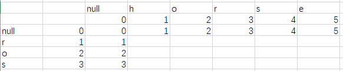

动态规划集合
摘录了一些经典的动态规划题
- 基本DP问题：
- 矩形DP问题
- 序列类动态规划问题
- 双序列类动态规划：字符匹配类
- 概率DP问题
- 各种Game集合
- 股票问题（状态机）
- Leetcode 121 Best Time to Buy and Sell Stock √
- Leetcode 122 Best Time to Buy and Sell Stock II √
- Leetcode 123 Best Time to Buy and Sell Stock III √
- Leetcode 188 Best Time to Buy and Sell Stock IV ×
- Leetcode 309 Best Time to Buy and Sell Stock with Cooldown √
- Leetcode 714 Best Time to Buy and Sell Stock with Transcation Fee √
基本DP问题：
70. Climbing Stairs √
假设你正在爬楼梯。需要 n 阶你才能到达楼顶。
每次你可以爬 1 或 2 个台阶。你有多少种不同的方法可以爬到楼顶呢？
注意：给定 n 是一个正整数。
示例 1：
输入：2
输出：2
解释： 有两种方法可以爬到楼顶。
- 1 阶 + 1 阶
- 2 阶
示例 2：
输入：3
输出：3
解释： 有三种方法可以爬到楼顶。
- 1 阶 + 1 阶 + 1 阶
- 1 阶 + 2 阶
- 2 阶 + 1 阶
1 | public int climbStairs(int n) { |
120. Triangle √
给定一个三角形，找出自顶向下的最小路径和。每一步只能移动到下一行中相邻的结点上。
例如，给定三角形：
[
[2],
[3,4],
[6,5,7],
[4,1,8,3]
]
自顶向下的最小路径和为 11（即，2 + 3 + 5 + 1 = 11）。
说明：
如果你可以只使用 O(n) 的额外空间（n 为三角形的总行数）来解决这个问题，那么你的算法会很加分。
二维dp解法：
1 | int[][]dp; |
如何降维打击呢？如果看过背包问题就不难回答了。dp[i][j]<—dp[i+1][j] , dp[i+1][j+1]。
因此正序遍历的话只会改变dp[i]的值，对dp[i+1]的值没有任何影响，所以我们降维打击应该采取正向遍历。
1 | public int minimumTotal(List<List<Integer>> triangle) { |
53. Maximum Subarray √
给定一个整数数组 nums ，找到一个具有最大和的连续子数组（子数组最少包含一个元素），返回其最大和。
示例:
输入: [-2,1,-3,4,-1,2,1,-5,4],
输出: 6
解释: 连续子数组 [4,-1,2,1] 的和最大，为 6。
**进阶:
如果你已经实现复杂度为 O(n) 的解法，尝试使用更为精妙的分治法求解。
1 | public int maxSubArray(int[] nums) { |
其实可以多开1个空间去优化代码长度：
1 | public int maxSubArray(int[] nums) { |
我们可以看到dp[i]其实依赖只于dp[i-1]，因此我们只需要两个变量足以。
1 | public int maxSubArray(int[] nums) { |
303. Range Sum Query - Immutable √
Given an integer array nums, find the sum of the elements between indices i and j (i ≤ j), inclusive.
Example:
1 | Given nums = [-2, 0, 3, -5, 2, -1] |
1 | int[] res; |
343. Integer Break √
Given a positive integer n, break it into the sum of at least two positive integers and maximize the product of those integers. Return the maximum product you can get.
Example 1:
1 | Input: 2 |
Example 2:
1 | Input: 10 |
1 | public int integerBreak(int n) { |
矩形DP问题
62. Unique Paths √
一个机器人位于一个 m x n 网格的左上角 （起始点在下图中标记为“Start” ）。
机器人每次只能向下或者向右移动一步。机器人试图达到网格的右下角（在下图中标记为“Finish”）。
问总共有多少条不同的路径？

Above is a 7 x 3 grid. How many possible unique paths are there?
例如，上图是一个7 x 3 的网格。有多少可能的路径？
说明： m 和 n 的值均不超过 100。
示例 1:
1 | 输入: m = 3, n = 2 |
示例 2:
1 | 输入: m = 7, n = 3 |
1 | public imt umiquePaths(imt m, imt n) { |
降维打击：
还是分析一下dp[i][j]依赖于dp[i][j]当前行的左边元素和dp[i-1][j]上一行的元素，因此应该选择正序遍历以实时获得当前行左边元素。
1 | public int uniquePaths(int m, int n) { |
64. Minimum Path Sum √
Given a m x n grid filled with non-negative numbers, find a path from top left to bottom right which minimizes the sum of all numbers along its path.
Note: You can only move either down or right at any point in time.
Example:
1 | Input: |
1 | public int minPathSum(int[][] grid) { |
63. Unique Paths II √
一个机器人位于一个 m x n 网格的左上角 （起始点在下图中标记为“Start” ）。
机器人每次只能向下或者向右移动一步。机器人试图达到网格的右下角（在下图中标记为“Finish”）。
现在考虑网格中有障碍物。那么从左上角到右下角将会有多少条不同的路径？

网格中的障碍物和空位置分别用 1 和 0 来表示。
说明：m 和 n 的值均不超过 100。
示例 1:
1 | 输入: |
1 | public int uniquePathsWithObstacles(int[][] obstacleGrid) { |
221. Maximal Square -
在一个由 0 和 1 组成的二维矩阵内，找到只包含 1 的最大正方形，并返回其面积。
示例:
1 | 输入: |
咋一看是dfs其实不然，试了很多方法都没办法真正解出来。
其实正方形大小计算就是看它左右还有斜下角是不是1。
1 | public int maximalSquare(char[][] matrix) { |
序列类动态规划问题
300. Longest Increasing Subsequence √
给定一个无序的整数数组，找到其中最长上升子序列的长度。
示例:
输入: [10,9,2,5,3,7,101,18]
输出: 4
解释: 最长的上升子序列是 [2,3,7,101]，它的长度是 4。
说明:
· 可能会有多种最长上升子序列的组合，你只需要输出对应的长度即可。
· 你算法的时间复杂度应该为 O(n2) 。
1 | public int lengthOfLIS(int[] nums) { |
LeetCode 第 256 号问题：粉刷房子 √
注意：本题为 LeetCode 的付费题目，需要开通会员才能解锁查看与提交代码。
题目描述
假如有一排房子，共 n 个，每个房子可以被粉刷成红色、蓝色或者绿色这三种颜色中的一种，你需要粉刷所有的房子并且使其相邻的两个房子颜色不能相同。
当然，因为市场上不同颜色油漆的价格不同，所以房子粉刷成不同颜色的花费成本也是不同的。每个房子粉刷成不同颜色的花费是以一个 n x 3 的矩阵来表示的。
例如，costs[0][0]表示第 0 号房子粉刷成红色的成本花费；costs[1][2]表示第 1 号房子粉刷成绿色的花费，以此类推。请你计算出粉刷完所有房子最少的花费成本。
注意：
所有花费均为正整数。
示例：
1 | 输入: [[17,2,17],[16,16,5],[14,3,19]] |
1 | public static int paint(int[][] cost){ |
198. House Robber √
You are a professional robber planning to rob houses along a street. Each house has a certain amount of money stashed, the only constraint stopping you from robbing each of them is that adjacent houses have security system connected and it will automatically contact the police if two adjacent houses were broken into on the same night.
Given a list of non-negative integers representing the amount of money of each house, determine the maximum amount of money you can rob tonight without alerting the police.
Example 1:
1 | Input: [1,2,3,1] |
1 | public int rob(int[] nums) { |
LeetCode 第 265 号问题：粉刷房子II √
注意：本题为 LeetCode 的付费题目，需要开通会员才能解锁查看与提交代码。
题目描述
假如有一排房子，共 n 个，每个房子可以被粉刷成 k 种颜色中的一种，你需要粉刷所有的房子并且使其相邻的两个房子颜色不能相同。
当然，因为市场上不同颜色油漆的价格不同，所以房子粉刷成不同颜色的花费成本也是不同的。每个房子粉刷成不同颜色的花费是以一个 n x k 的矩阵来表示的。
例如，costs[0][0] 表示第 0 号房子粉刷成 0 号颜色的成本花费；costs[1][2] 表示第 1 号房子粉刷成 2 号颜色的成本花费，以此类推。请你计算出粉刷完所有房子最少的花费成本。
注意：
所有花费均为正整数。
示例：
1 | 输入: [[1,5,3],[2,9,4]] |
进阶：
您能否在 O(nk) 的时间复杂度下解决此问题？
1 | public static int minCostII(int[][] costs) { |
其实这是可以优化的，我们只需要在第 i - 1 个位置的状态中找到最小值和次小值，在选择第 i 个房子的颜色的时候，我们看当前颜色是不是和最小值的颜色相重，不是的话直接加上最小值，如果相重的话，我们就加上次小值，这样一来，我们把两个嵌套的循环，拆开成两个平行的循环，时间复杂度降至 O(n*k)。
1 | public static int minCostII2(int[][] costs) { |
213. House Robber II √
You are a professional robber planning to rob houses along a street. Each house has a certain amount of money stashed. All houses at this place are arranged in a circle. That means the first house is the neighbor of the last one. Meanwhile, adjacent houses have security system connected and it will automatically contact the police if two adjacent houses were broken into on the same night.
Given a list of non-negative integers representing the amount of money of each house, determine the maximum amount of money you can rob tonight without alerting the police.
Example 1:
1 | Input: [2,3,2] |
1 | public int rob(int[] nums) { |
413. Arithmetic Slices √
A sequence of number is called arithmetic if it consists of at least three elements and if the difference between any two consecutive elements is the same.
For example, these are arithmetic sequence:
1 | 1, 3, 5, 7, 9 |
The following sequence is not arithmetic.
1 | 1, 1, 2, 5, 7 |
A zero-indexed array A consisting of N numbers is given. A slice of that array is any pair of integers (P, Q) such that 0 <= P < Q < N.
A slice (P, Q) of array A is called arithmetic if the sequence:
A[P], A[p + 1], …, A[Q - 1], A[Q] is arithmetic. In particular, this means that P + 1 < Q.
The function should return the number of arithmetic slices in the array A.
Example:
1 | A = [1, 2, 3, 4] |
1 | public int numberOfArithmeticSlices(int[] A) { |
279. Perfect Squares √
Given a positive integer n, find the least number of perfect square numbers (for example, 1, 4, 9, 16, ...) which sum to n.
Example 1:
1 | Input: n = 12 |
Example 2:
1 | Input: n = 13 |
贪心失败 比如说12
1 | public int numSquares(int n) { |
91. Decode Ways ×
A message containing letters from A-Z is being encoded to numbers using the following mapping:
1 | 'A' -> 1 |
Given a non-empty string containing only digits, determine the total number of ways to decode it.
Example 1:
1 | Input: "12" |
Example 2:
1 | Input: "226" |
1 | public int numDecodings(String s) { |
双序列类动态规划：字符匹配类
它的题目特征其实特别明显，比如：
· 输入是两个字符串，问是否通过一定的规则相匹配
· 输入是两个字符串，问两个字符串是否存在包含被包含的关系
· 输入是两个字符串，问一个字符串怎样通过一定规则转换成另一个字符串
· 输入是两个字符串，问它们的共有部分
可以画表格来解题
1143. Longest Common Subsequence -
给定两个字符串 text1 和 text2，返回这两个字符串的最长公共子序列。
一个字符串的 子序列 是指这样一个新的字符串：它是由原字符串在不改变字符的相对顺序的情况下删除某些字符（也可以不删除任何字符）后组成的新字符串。
例如，”ace” 是 “abcde” 的子序列，但 “aec” 不是 “abcde” 的子序列。两个字符串的「公共子序列」是这两个字符串所共同拥有的子序列。
若这两个字符串没有公共子序列，则返回 0。
示例 1:
1 | 输入：text1 = "abcde", text2 = "ace" |
示例 2:
1 | 输入：text1 = "abc", text2 = "abc" |
示例 3:
1 | 输入：text1 = "abc", text2 = "def" |
画图可得
1 | "" a c e |
在拆解问题中也说了，有两种情况，就是:
1 | 如果 str1(i) != str2(j): |
讲道理，第二次做的时候不明白为什么和dp[i - 1][j - 1]有关。
其实是这样，比如说我们比abc和acc，要么最长的长度是ab和ac基础上+1，要么是abc和ac，要么是acc和ab。因为acc和abc以及ac和abc的匹配长度是一样的。所以abc和acc不能是ac基础上+1。
1 | public int longestCommonSubsequence(String text1, String text2) { |
优化后：
1 | public int longestCommonSubsequence(String s1, String s2) { |
^是亦或
72. Edit Distance √
给定两个单词 word1 和 word2*，计算出将 *word1 转换成 word2 所使用的最少操作数 。
你可以对一个单词进行如下三种操作：
· 插入一个字符
· 删除一个字符
· 替换一个字符
示例 1:
输入: word1 = “horse”, word2 = “ros”
输出: 3
解释:
horse -> rorse (将 ‘h’ 替换为 ‘r’)
rorse -> rose (删除 ‘r’)
rose -> ros (删除 ‘e’)
示例 2:
输入: word1 = “intention”, word2 = “execution”
输出: 5
解释:
intention -> inention (删除 ‘t’)
inention -> enention (将 ‘i’ 替换为 ‘e’)
enention -> exention (将 ‘n’ 替换为 ‘x’)
exention -> exection (将 ‘n’ 替换为 ‘c’)
exection -> execution (插入 ‘u’)
求什么就设什么
Dp[i][j]设为word1 的前i个字符和word2的前j个字符转换为相同字符串的最小费用
初始化条件矩阵（x轴设为i，y轴为j）
因为null->null h o r s e分别是0 1 2 3 4 5
且null->null r o s 分别是 0 1 2 3

H和R

此时黄色格子的值相当于是把h替换r是最小的
Min(dp[i-1][j],dp[i][j-1],dp[i-1][j-1])+1
因此dp[i-1][j-1]+1代表替换操作
HO和R->依赖以上一步的变化结果->RO和R
此时可以是将o删除 dp[i-1][j]+1(i-1就是删除i)或者是将o替换成null
此时可以将o插入dp[i][j-1]+1(插入也相当于删除第j个元素)
因此我们可以得到
If(word1[i]==word1[j])
Dp[i][j]=dp[i-1][j-1]
Else
Dp[i][j]=Min(dp[i-1][j],dp[i][j-1],dp[i-1][j-1])+1;
| 0 | 1 | 2 | 3 | 4 | 5 |
|---|---|---|---|---|---|
| 1 | 1 | 2 | 2 | 3 | 4 |
| 2 | 2 | 1 | 2 | 3 | 4 |
| 3 | 3 | 2 | 2 | 2 | 3 |
每次pre一开始肯定是dp[0],然后是dp[1]…dp[m],循环了一遍后
又是从dp[0]开始。因为循环没有改变dp[0]的值，因此需要改变。（在二维里面可以初始化dp[i][0]），在一维的里面必须手动初始化。
其实从另外一个角度去想问题，题目和你说了增删改都行。因此你可以不用题目的例子自己想例子，然后去推出里面的关系比如说ac和acd就可以推出增删（还有相等）的情况，然后ad和ac就可以推出改的情况。题目例子往往没那么好一眼看出其中的关系。
1 | public int minDistance(String word1, String word2) { |
降维打击
1 | public int minDistance(String word1, String word2) { |
44. Wildcard Matching -
给定一个字符串 (s) 和一个字符模式 (p) ，实现一个支持 ‘?’ 和 ‘*’ 的通配符匹配。
‘?’ 可以匹配任何单个字符。
‘*’ 可以匹配任意字符串（包括空字符串）。
两个字符串完全匹配才算匹配成功。
说明:
· s 可能为空，且只包含从 a-z 的小写字母。
· p 可能为空，且只包含从 a-z 的小写字母，以及字符 ? 和 *。
示例 1:
输入:
s = “aa”
p = “a”
输出: false
解释: “a” 无法匹配 “aa” 整个字符串。
示例 2:
输入:
s = “aa”
p = “*”
输出: true
解释: ‘*’ 可以匹配任意字符串。
示例 3:
输入:
s = “cb”
p = “?a”
输出: false
解释: ‘?’ 可以匹配 ‘c’, 但第二个 ‘a’ 无法匹配 ‘b’。
示例 4:
输入:
s = “adceb”
p = “ab”
输出: true
解释: 第一个 ‘‘ 可以匹配空字符串, 第二个 ‘‘ 可以匹配字符串 “dce”.
示例 5:
输入:
s = “acdcb”
p = “a*c?b”
输入: false
题目给定两个字符串，一个字符串是匹配串，除了小写字母外，匹配串里面还包含 * 和 ? 这两个特殊字符，另一个是普通字符串，里面只包含小写字母。
题目问这个普通字符串是否和匹配字符串相匹配，匹配规则是 ? 可以匹配单个字符，* 可以匹配一个区间，也就是多个字符，当然也可以匹配 0 个字符，也就是空串。
依然是四个步骤走一遍：
· 问题拆解
做多了，你发现这种问题其实都是一个套路，老样子，我们还是根据我们要求解的问题去看和其直接相关的子问题，我们需要求解的问题是 pattern(0…m) 和 str(0…n) 是否匹配，这里的核心依然是字符之间的比较，但是和之前不同的是，这个比较不仅仅是看两个字符相不相等，它还有了一定的匹配规则在里面，那我们就依次枚举讨论下：
pattern(m) == str(n):
问题拆解成看子问题 pattern(0…m-1) 和 str(0…n-1) 是否匹配
pattern(m) == ?:
问题拆解成看子问题 pattern(0…m-1) 和 str(0…n-1) 是否匹配
pattern(m) == *:可以匹配空串、以及任意多个字符
当 * 匹配空串时：问题拆解成看子问题 pattern(0…m-1) 和 str(0…n) 是否匹配
当 * 匹配任意字符时：问题拆解成看子问题 pattern(0…m) 和 str(0…n-1) 是否匹配
这里解释一下，匹配任意多个字符意味着之前的子问题也可以使用当前的，也就是用 pattern(m) 来进行匹配，因此，当前问题可以拆解成子问题 pattern(0…m) 和 str(0…n-1) 是否匹配，你发现弄来弄去，子问题依然是那三个：
· pattern(0…m-1) 和 str(0…n-1) 是否匹配
· pattern(0…m-1) 和 str(0…n) 是否匹配
· pattern(0…m) 和 str(0…n-1) 是否匹配
不知道你是否发现了字符匹配类动态规划问题的共性，如果是画表格，你只需要关注当前格子的 左边、上边、左上 这三个位置的相邻元素，因为表格有实际数据做辅助，所以画表格有时可以帮助你找到问题与子问题之间的联系。
· 状态定义
还是老样子，dp[i][j] 表示的就是问题 pattern(0…i) 和 str(0…j) 的答案，直接说就是 pattern(0…i) 和 str(0…j) 是否匹配
· 递推方程
把之前 “问题拆解” 中的文字描述转换成状态的表达式就是递推方程：
pattern(i) == str(j) || pattern(i) == ‘?’:
dp[i][j] = dp[i - 1][j - 1]
pattern(i) == ‘*’:
dp[i][j] = dp[i - 1][j] || dp[i][j - 1]
· 实现
这类问题的状态数组往往需要多开一格，主要是为了考虑空串的情况，这里我就不赘述了。
我想说的是，关于初始化的部分，如果 str 是空的，pattern 最前面有 *，因为 * 是可以匹配空串的，因此这个也需要记录一下，反过来，如果 pattern 是空的，str 只要不是空的就无法匹配，这里就不需要特别记录。
1 | public boolean isMatch(String s, String p) { |
降维打击！
S=” acdcb”
P= “a*c?b”
| Null | A | C | D | C | B | |
|---|---|---|---|---|---|---|
| Null | T | F | F | F | F | F |
| A | F | T | F | F | F | F |
| ***** | F | T | T | T | T | T |
| C | F | F | T | F | T | F |
| ? | F | F | F | T | F | T |
| B | F | F | F | F | F | F |
| Null | A | C | D | C | B | |
|---|---|---|---|---|---|---|
| Null | T | F | F | F | F | F |
| A | F | T | F | F | F | F |
| ***** | F | T | T | T | T | T |
| C | F | Position1 | ||||
| ? | ||||||
| B |
由于上面都是FTTTTT而position1的时候应该是false，由于二维数组默认初始化是false，一维数组是继承上一次的值，因此判断条件得改。
1 | public boolean isMatch1(String s, String p) { |
难度挺大的，我也不能自己改出来。
10. Regular Expression Matching ×
Given an input string (s) and a pattern (p), implement regular expression matching with support for ‘.’ and ‘*’.
‘.’ Matches any single character.
‘*’ Matches zero or more of the preceding element.
The matching should cover the entire input string (not partial).
Note:
- s could be empty and contains only lowercase letters a-z.
- p could be empty and contains only lowercase letters a-z, and characters like . or *.
Example 1:
Input:
s = “aa”
p = “a”
Output: false
Explanation: “a” does not match the entire string “aa”.
Example 2:
Input:
s = “aa”
p = “a*”
Output: true
Explanation: ‘*’ means zero or more of the preceding element, ‘a’. Therefore, by repeating ‘a’ once, it becomes “aa”.
Example 3:
Input:
s = “ab”
p = “.*”
Output: true
Explanation: “.*” means “zero or more (*) of any character (.)”.
Example 4:
Input:
s = “aab”
p = “cab”
Output: true
Explanation: c can be repeated 0 times, a can be repeated 1 time. Therefore, it matches “aab”.
Example 5:
Input:
s = “mississippi”
p = “misis*p.”
Output: false
和上一道题有点像但是有点不同，还是先画图。
遇到初始化问题我们也可以画图，然后我们需要
c*可以看做是null
因此c==null初始化为true同理ca*也是true
l 匹配空串aa*和aa
dp[i][j]=dp[i-1][j];
l 匹配0个前一个字符，bc* b
dp[i][j]=dp[i-2][j]
l 然后它还有一个功能就是匹配n个前个字符a*和aaaaaa
那么我们就需要判断a的第一个a和aaaa的后面几个a一不一样，否则会出现a匹配abbb等等情况，或者说.*可以匹配abccdd等等情况。
1. ba*和b这种情况下，b和a不相等，那么*只有消除a的情况下才可能匹配**
2. 如果是p[]相等的情况下。
如果是a*和aaaa这种情况下，此时*下标为i只有a[i-1]和a[j]相等的情况下，*代表n个a才是有意义的。dp[i][j-1]
“aaa”和”ab*a*c*a”情况下，b*和c*为空且a*只能代表一个a，
B*为空就是等于dp[i][j]=dp[i-2][j];
a*代表一个a就等于dp[i][j]=dp[i-1][j]
1 | public boolean isMatch(String s, String p) { |
97. Interleaving String ×
给定三个字符串 s1, s2, s3, 验证 s3 是否是由 s1 和 s2 交错组成的。
示例 1:
1 | 输入: s1 = "aabcc", s2 = "dbbca", s3 = "aadbbcbcac" |
示例 2:
1 | 输入: s1 = "aabcc", s2 = "dbbca", s3 = "aadbbbaccc" |
用三个指针并不行，因为如果s3=cac ，s1=c，s2=ca就不行了。所以还是dp解，如果s1和s2没有共同的字符那么就可以过了
题目的输入是三个字符串，问其中两个字符串是否能够交错合并组成第三个字符串，一个字符相对于其他字符的顺序在合并之后不能改变，这也是这道题的难点，不然的话你用一个哈希表就可以做了，三个字符串是否意味着要开三维的状态数组？还是四个步骤来看看：
· 问题拆解
在拆解问题之前，我们必须保证前两个字符串的字符的总数量必须正好等于第三个字符串的字符总数量，不然的话，再怎么合并也无法完全等同。这里有一个点，当我们考虑 str1(0…i) 和 str2(0…j) 的时候，其实第三个字串需要考虑的范围也就确定了，就是 str3(0…i+j)。如果我们要求解问题 str1(0…m) 和 str2(0…n) 是否能够交错组成 str3(0…m+n)，还是之前那句话，字符串匹配问题的核心永远是字符之间的比较：
· 如果 str1(m) == str3(m+n)，问题拆解成考虑子问题 str1(0…m-1) 和 str2(0…n) 是否能够交错组成 str3(0…m+n-1)
· 如果 str2(n) == str3(m+n)，问题拆解成考虑子问题 str1(0…m) 和 str2(0…n-1) 是否能够交错组成 str3(0…m+n-1)
你可能会问需不需要考虑子问题 str1(0…m-1) 和 str2(0…n-1)？
在这道题目当中，不需要！
千万不要题目做多了就固定思维了，之前说到这类问题可以试着考虑三个相邻子问题是为了让你有个思路，能更好地切题，并不是说所有的字符串匹配问题都需要考虑这三个子问题，我们需要遇到具体问题具体分析。
· 状态定义
dp[i][j] 表示的是 str1(0…i) 和 str2(0…j) 是否可以交错组成 str3(0…i+j)，这里再补充说明下为什么我们不需要开多一维状态来表示 str3，其实很简单，str3 的状态是由 str1 str2 决定的，str1 str2 定了，str3 就定了
· 递推方程
把之前问题拆解中的文字描述转换成状态的表达式就是递推方程：
str1(i) == str3(i+j)
dp[i][j] |= dp[i - 1][j]
str2(j) == str3(i+j)
dp[i][j] |= dp[i][j - 1]
· 实现
初始化的时候需要考虑单个字符串能否组成 str3 对应的区间，这个比较简单，直接判断前缀是否相等即可。
1 | public boolean isInterleave(String s1, String s2, String s3) { |
也是能降维打击的（降维打击的难点在于初始化以及temporary memo），能做出来就行了其实，但是面试可能问怎么优化。
如果还是没有思路，那就画画表格吧，考虑当前格子的时候，看看其 左边，上边，左上边 这三个格子所代表的子问题的状态，有实际数据作为辅助，问题之间的递进关系相对来说会比较好找些。
概率DP问题
4. 信件错排 ×
题目描述：有 N 个 信 和 信封，它们被打乱，求错误装信方式的数量。
定义一个数组 dp 存储错误方式数量，dp[i] 表示前 i 个信和信封的错误方式数量。假设第 i 个信装到第 j 个信封里面，而第 j 个信装到第 k 个信封里面。根据 i 和 k 是否相等，有两种情况：
- i==k，交换 i 和 j 的信后，它们的信和信封在正确的位置，但是其余 i-2 封信有 dp[i-2] 种错误装信的方式。由于 j 有 i-1 种取值，因此共有 (i-1)*dp[i-2] 种错误装信方式。
- i != k，交换 i 和 j 的信后，第 i 个信和信封在正确的位置，其余 i-1 封信有 dp[i-1] 种错误装信方式。由于 j 有 i-1 种取值，因此共有 (i-1)*dp[i-1] 种错误装信方式。
综上所述，错误装信数量方式数量为：
5. 母牛生产 √
题目描述：假设农场中成熟的母牛每年都会生 1 头小母牛，并且永远不会死。第一年有 1 只小母牛，从第二年开始，母牛开始生小母牛。每只小母牛 3 年之后成熟又可以生小母牛。给定整数 N，求 N 年后牛的数量。
第 i 年成熟的牛的数量为：
各种Game集合
1025. Divisor Game ×
Alice and Bob take turns playing a game, with Alice starting first.
Initially, there is a number N on the chalkboard. On each player’s turn, that player makes a move consisting of:
- Choosing any
xwith0 < x < NandN % x == 0. - Replacing the number
Non the chalkboard withN - x.
Also, if a player cannot make a move, they lose the game.
Return True if and only if Alice wins the game, assuming both players play optimally.
Example 1:
1 | Input: 2 |
Example 2:
1 | Input: 3 |
Game类问题都有一个特性，就是无论A还是B玩，都是在同样一个规则下做游戏，A或者B都不会对结果改变。
其实就是DP问题。
1 | public boolean divisorGame(int N) { |
数学证明法:
Prove it by two steps:
- if Alice will lose for N, then Alice will must win for N+1, since Alice can first just make N decrease 1.
- for any odd number N, it only has odd factor, so after the first move, it will be an even number
let’s check the inference
fisrt N = 1, Alice lose. then Alice will must win for 2.
if N = 3, since all even number(2) smaller than 3 will leads Alice win, so Alice will lose for 3
3 lose -> 4 win
all even number(2,4) smaller than 5 will leads Alice win, so Alice will lose for 5
…
Therefore, Alice will always win for even number, lose for odd number.
877. Stone Game
Alex and Lee play a game with piles of stones. There are an even number of piles arranged in a row, and each pile has a positive integer number of stones piles[i].
The objective of the game is to end with the most stones. The total number of stones is odd, so there are no ties.
Alex and Lee take turns, with Alex starting first. Each turn, a player takes the entire pile of stones from either the beginning or the end of the row. This continues until there are no more piles left, at which point the person with the most stones wins.
Assuming Alex and Lee play optimally, return True if and only if Alex wins the game.
Example 1:
1 | Input: [5,3,4,5] |
股票问题（状态机）
先讲一下状态机：
类似于这样的图就叫做状态机，状态只能为状态0，状态1和状态2.
而且它们之间是可以互相转换的，且有一定的条件发生转换。
例如图一：
状态0可以保持状态0，也可以通过消抖进入状态1.
状态1可以通过确认变为状态2或者通过干扰变成状态0.
之前也学过状态机。这只是个例子，让你可以对状态机有一个大体的理解，实际上根据不同的问题，我们可以画出不同的状态机。
状态机可以很简单的解决一系列的hard问题。
可以先看看我写的《最大子序列》
然后我们可以用一种独特的方法再来看待这道题。
看股票问题前先看完背包问题。
Leetcode 121 Best Time to Buy and Sell Stock √
给定一个数组prices，prices[i]表示股票在第i天的价格（买入or卖出），在卖出股票之前必须先买进，且手中不能同时买进两份股票，现在允许做恰好一次交易，求最大收益。
样例：
输入：[7, 1, 5, 3, 6, 4]
输出：5
输入：[7, 6, 4, 3, 1]
输出：0
正常解法
1 | public int maxProfit(int[] prices) { |
我们声明：
定义sell表示截止到当天，卖之后能得到的最大收益
定义buy表示截止到当天，买之后能得到的最大收益
我们可以画出状态机：（画的有点差）
就是说它有两个状态，一个是BUY，一个是SELL。
买入必须在卖出之前，且卖出必须依赖于上一个买入的值。
BUY可以保存BUY的状态或者通过买入进入SELL状态。
SELL可以保存SELL的状态或者通过卖出退出状态。
卖完后就结束了。
因此我们可以写出递推式：
Buy = max(Buy,0-price[i]);
Sell=max(Sell,Buy+price[i]);
然后我们遍历一遍pirce数组，由于我们在一个循环里面同时做buy和sell。因此不会发生sell在buy之前。
又由于sell依赖于上次buy的值，而不是buy更新后的值。所以我们在进入循环前先初始化buy为-price[0]; sell为0（因为收益最少为0），在循环中先sell然后再buy。Sell处理初始化buy的值，然后buy更新buy的值。
如果要先执行buy再执行sell也可以。前提是得用一个变量先保存当前buy的值。
| 1 | 2 | 3 | 4 | 5 | |
|---|---|---|---|---|---|
| Sell | 0 | 1 | 2 | 3 | 4 |
| Buy | -1 | -1 | -1 | -1 | -1 |
| Statue | buy | sell |
1 | public int stateMachine(int[] prices){ |
或者用tmp保存上次buy的值。
1 | public int stateMachine1(int[] prices){ |
当然其实不用tmp保存也是可以的，就相当于初始化为price[0]或者price[1]的最小值，也就是-price[0]或者-price[1]的最大值。
Leetcode 122 Best Time to Buy and Sell Stock II √
给定一个数组prices，prices[i]表示股票在第i天的价格（买入or卖出），在卖出股票之前必须先买进，且手中不能同时买进两份股票，现在允许做无数次交易，求最大收益。
输入：[7, 1, 5, 3, 6, 4]
输出：7
输入：[1, 2, 3, 4, 5]
输出：4
正常解法
1 | public int maxProfit1(int[] prices) { |
第一步：下定义
定义sell表示截止到当天，卖之后能得到的最大收益
定义buy表示截止到当天，买之后能得到的最大收益
第二步：画状态机
第三步：写递推式
BUY = max(BUY,SELL-PRICE[I]);
SELL = max(SELL,BUY+PRICE[I]);
| 7 | 1 | 5 | 3 | 6 | 4 | |
|---|---|---|---|---|---|---|
| Sell | 0 | 0 | 4 | 4 | 7 | 7 |
| buy | -7 | -1 | -1 | 1 | 1 | 3 |
| statue | Buy | Sell | Buy | Sell | buy |
我们可以看到：
因为都是取最大值max，所以buy和sell都是上升的
Buy依赖于上一个sell，sell依赖于上一个buy
第四步：写代码
1 | public int maxProfit(int[] prices) { |
先卖再买还是因为我们已经初始化了buy了，默认让它选择第一个元素，因此可以选择卖或者不变。
Leetcode 123 Best Time to Buy and Sell Stock III √
给定一个数组prices，prices[i]表示股票在第i天的价格（买入or卖出），在卖出股票之前必须先买进，且手中不能同时买进两份股票，现在允许做最多两次交易，求最大收益。
输入：[3,3,5,0,0,3,1,4]
输出：6
输入：[1, 2, 3, 4, 5]
输出：4
OK
还是四步走！
自己试试看，其实画出状态图就行了。
Step1:
定义sell0表示截止到当天，第一次卖之后能得到的最大收益
定义buy0表示截止到当天，第一次买之后能得到的最大收益
定义sell1表示截止到当天，第二次卖之后能得到的最大收益
定义buy1表示截止到当天，第二次买之后能得到的最大收益
Step2:
Step3:
注意如何初始化！！
BUY2定义为多少？
首先BUY2的值必须等于sell1-price[i]吧，所以buy2就必须初始化为最小值
Integer.MIN_VALUE
那Sell2呢？也是0
因此：
SELL1=MAX(SELL1,BUY1+PRICE[I]);
BUY1=MAX(BUY1, 0-PRICE[I]);
SELL2=MAX(SELL2,BUY2+PRICE[I]);
BUY2=MAX(BUY2,SELL1-PRICE[I]);
这里有什么问题吗？
尽管我们在这里利用颠倒buy和sell的顺序来做（为什么颠倒可以避免更新？因为我们初始化了buy和sell，如果不初始化buy1的话我们要正序，但是正序就需要更多的tmp来保存状态了，不知道能不能理解）。BUY2依赖于上个SELL1的值，但是在BUY2更新之前SELL1就已经更新了，因此需要保存。
1 | public int maxProfit(int[] prices) { |
但是实际上我们还可以颠倒sell1和sell2的顺序,而不需要tmp
1 | public int maxProfit(int[] prices) { |
Leetcode 188 Best Time to Buy and Sell Stock IV ×
给定一个数组prices，prices[i]表示股票在第i天的价格（买入or卖出），在卖出股票之前必须先买进，且手中不能同时买进两份股票，现在允许做最多K次交易，求最大收益。
输入：[2, 4, 1], k = 2
输出：2
输入：[3,2,6,5,0,3], k = 2
输出：7
刚刚两次交易我们需要buy1 buy2 sell1 sell2，所以K次交易需要多少个sell buy呢？K个吗？
不一定对。
当K>=给定数组长度/2 即：price.length/2的时候，我们可以理解为买卖无数次的结果，因此相对于第二题。为什么要想那么麻烦呢？因为第二题是O(n)的解法。
初始化buy可以都填充-prices[0]的
1 | public int maxProfit(int k, int[] prices) { |
Leetcode 309 Best Time to Buy and Sell Stock with Cooldown √
给定一个数组prices，prices[i]表示股票在第i天的价格（买入or卖出），在卖出股票之前必须先买进，且手中不能同时买进两份股票，现在允许做无数次交易，但每次卖出之后必须至少休息一天，求最大收益。
输入：[1,2,3,0,2]
输出：3
自己做吧
定义sell表示截止到当天，卖之后能得到的最大收益
定义buy表示截止到当天，买之后能得到的最大收益
定义rest表示截止到当天，休息之后能得到的最大收益
Rest的初始值？？
按顺序：
1 | public int maxProfit(int[] prices) { |
Leetcode 714 Best Time to Buy and Sell Stock with Transcation Fee √
给定一个数组prices，prices[i]表示股票在第i天的价格（买入or卖出），在卖出股票之前必须先买进，且手中不能同时买进两份股票，现在允许做无数次交易，但每次卖出需要支付一定的手续费，求最大收益。
输入：[1, 3, 2, 8, 4, 9], fee = 2
输出：8
1 | public int maxProfit(int[] prices, int fee) { |